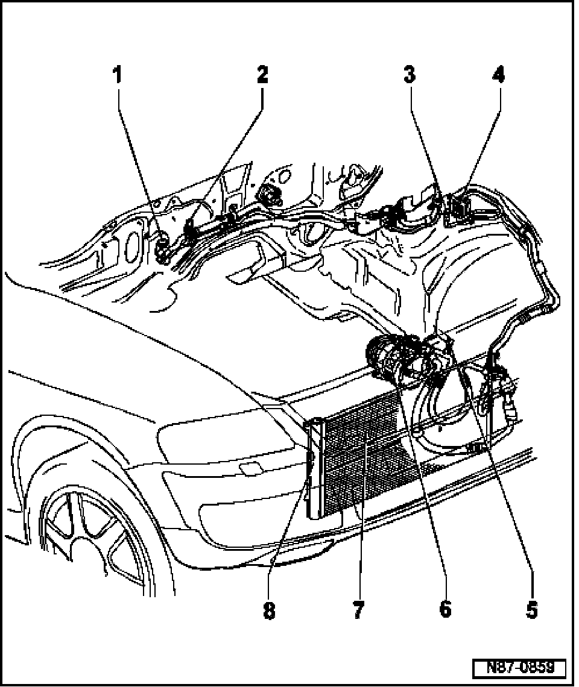
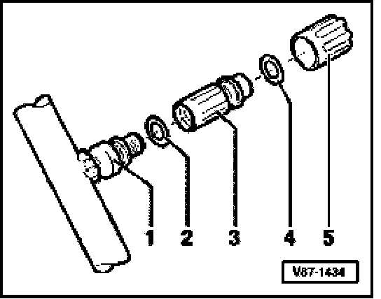
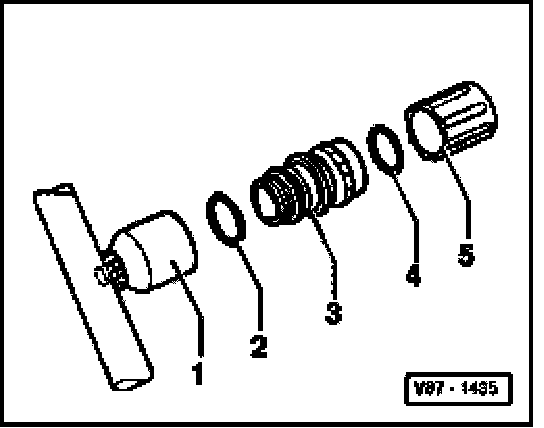

A/C Refrigerant System, Servicing Function
A/C Refrigerant System, Servicing Function

1. Expansion valve
- Engine compartment right
2. High Pressure Sensor -G65-
3. High pressure service valve
- Removing and installing see Fig. 2
4. Low pressure service valve
- Removing and installing see Fig. 1
5. Refrigerant Temperature Sensor -G454-
6. Compressor
- Manufacturer: Denso
Designation 7SEU16C
- Note installation/running in procedures
- Without A/C Clutch -N25-
- Compressor manufacturer overview:
7. Condenser
8. Reservoir with drier cartridge
- Integrated with condenser
- Replace every time refrigerant circuit has been opened.
- Drier cartridge, replacing
Fig. 1 Low pressure service valve, removing

WARNING: Low pressure service valve must only be removed after refrigerant circuit has been discharged.
- Observe notes.
- Discharge refrigerant circuit
1. Connection with external thread and groove for O-ring
2. O-ring
7.6 mm; 1.8 mm
3. Service valve
4. O-ring
7.6 mm; 1.8 mm
5. Cap
Fig. 2 High pressure service valve, removing

WARNING: High pressure service valve must only be removed after refrigerant circuit has been discharged.
- Observe notes.
- Discharge refrigerant circuit
1. Connection with internal thread
2. O-ring
10.8 mm; 1.8 mm
3. Service valve with groove and internal thread for cap.
4. O-ring
10.8 mm; 1.8 mm
5. Cap